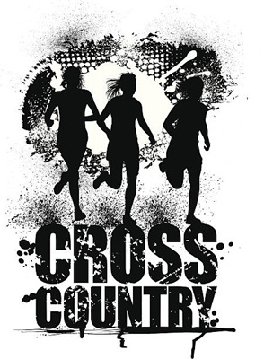
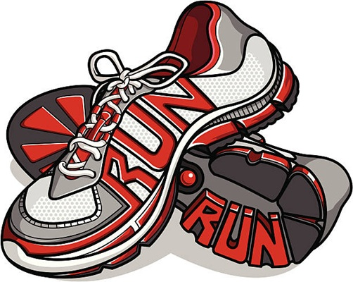

Cross Country is a Great Sport
Why Cross Country is a Great Sport
This is a paragraph about why cross country is fun. Running is a great form of exercise. It is really good for your cardiovascular system and running also boosts your mood and reduces stress (I think). Running with other people is even better because you can talk to your friends while exercising.
Here is a second paragraph about why running is great. As a sport, running is good because it is very cheap and there are less injuries than other sports. All you need to run are a good pair of running shoes. There is no special equipment required. Running is not a contact sport so there are significantly less injuries than in sports like soccer or football.
 
Pros and Cons of Different Races
| Event | Pros | Cons |
|---|---|---|
| 5K XC | Not too long | Last mile sucks |
| 1600 m (track) | Short race | N/A |
| 3200 m | Not painfull until second mile | too long and boring around a track |
| 10K road race | Don't need to run very fast | Can be boring and long |